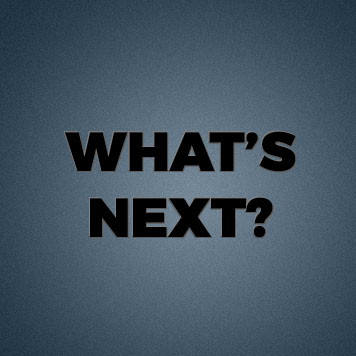

About
Interests, skills, and hobbies
-

Computer Scientist
My relationship with computers has been one of interminable fascination. Both the practical and theoretical aspects of computer science are enjoyable and immensely rewarding, and I believe that a holistic understanding of computers necessitates an understanding of both aspects, as well as an understanding of human interdependence, teamwork, social behavior, geopolitics, and the physics of the universe.
-

Linux Enthusiast
Linux has been a source of inspiration and an environment of continuous learning and self-leverage. The kernel itself is a technical marvel despite its many flaws, the freedom of user-space liberating and a staging ground to understand the merits of the Free Software movement, and the distributed, open-source means of contribution a revelation of human teamwork rooted in a legitimate shared goal.
-

Runner & Rock climber
Exercise in some form has always been a part of my life. Health benefits aside, exercise serves as a constant reminder that one's limits are primarily imposed by the mind, and that improvement demands a willingness to go through pain and discomfort. It reminds me that sustained comfort is not a sign of success, but of stagnation. It connects mind and body in a manner that was biologically meant to happen, and makes both stronger.
-

Musician
The creation and performance of music parallels the act of programming in the sense that both require one to be fastidious while still ensuring that the sum of all parts is well-integrated. By singing and playing the flute & saxophone, I have the pleasure of―much like programming―challenging myself while at the same time partaking in an activity that is inherently enjoyable.
-
Game Developer
The development of video games couples creative and technical work in a manner quite irresistible. Modding, developing, and analyzing games has taught me to concern myself not only with how to make a program work, but also how to make it auditorily & visually aesthetic, as well as captivating to use.
-

Technically, my current focus lies primarily with Amlang (see below) and purple teaming. However, I am always looking for opportunities broadly to contribute to compelling projects, work with others as a cohesive and mutually-mentoring team, and improve myself.